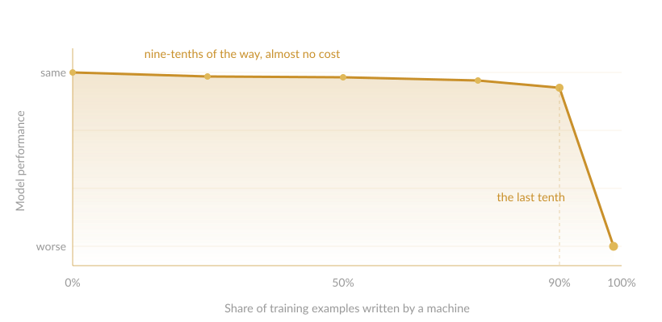

The Last 10%
You can replace nine-tenths of your training data with machine-generated examples and barely notice. Replace the final tenth and performance falls off a cliff.

To make a model good at something specific, say reading a document and answering questions about it, you train it on examples. An example is a worked case: here is a passage, here is a question about it, here is the correct answer. Show a model a few thousand of those and it gets substantially better at the task.
Someone has to write each one. That is slow and expensive, so the field asked the obvious question. Could a model write its own?
Across eight datasets, Dhananjay Ashok and Jonathan May tested how far that goes. The answer is almost all the way, and the shape of that “almost” is strange.
The cliff
The setup is straightforward. The total number of examples never changes. Only who wrote them does. Start with all human, then replace them with machine-written ones a batch at a time, retraining after each swap.
For most of the way, almost nothing happens. Replace 90% of the human examples and the model performs about as well as it did on the fully human set.
The last stretch is where it breaks. Out of 5,000 examples, a model that kept just 125 human-written ones consistently beat a model that kept none. Losing that final 2.5% did more damage than losing the previous 90%.
Human data behaves less like flour, where more is simply more, and more like yeast. A loaf is almost entirely flour and water, but leave out the pinch of yeast and it never rises, no matter how much flour you add.
The effect survived scrutiny. It held across three more languages, models from 1B to 30B parameters, and three separate generators: GPT-3.5, GPT-4, and Claude. It also held when the test data came from entirely different datasets, which rules out the models simply learning their annotators’ habits.
Diversity doesn’t explain it
The usual explanation is that machine-written data is repetitive. The authors checked, and it isn’t.
On one dataset the synthetic examples contained no duplicates at all, against roughly 10% for the humans. More varied, and still worse. Whatever human data supplies, diversity is not a good proxy for it.
The real difference was subtler. Synthetic questions and answers ran longer and borrowed far more phrasing from the source text, while humans reworded, compressed, and used vocabulary the source never contained. The machine stayed on the page. The people moved off it.
What it costs
Human examples are better. Machine examples are cheaper. Where do they cross?
The authors added 200 human examples to a synthetic training set, then asked how much more synthetic data would buy the same improvement. The answer was consistently an order of magnitude or more. On one dataset, those 200 examples were worth around 17,000 machine-written ones.
They decline to read the largest estimates literally, and that caution is warranted. But their interpretation is the interesting one. On some tasks, a little human data may buy performance that no amount of synthetic data reaches.
This is not a paper claiming synthetic data fails. Purely synthetic models still performed reasonably throughout, and the authors are explicit that the result is task-dependent. They studied fact verification and question answering, not mathematics or code.
Dhananjay Ashok and Jonathan May, A Little Human Data Goes A Long Way, Information Sciences Institute, University of Southern California. arXiv:2410.13098. Read the paper